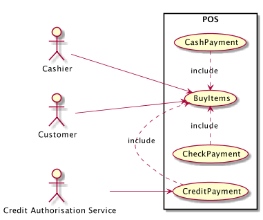

Use Cases and Use Case Diagrams
Table of Contents
1 About This Sprint
This sprint introduces UML use cases and UML use case diagrams as a means of putting requirements into a context and understanding the interactions between users and the system.
2 User Stories covered in this Sprint
- As a software designer I want to document what the customer is telling me so that I can discuss my understanding of their requirements with them.
- As a software designer I want to document what the customer is telling me so that I can easily continue designing based on a joint understanding.
- As a software designer I want to be able to reuse common procedures between my use cases so that I only have to maintain them in one place.
- As a project manager I need to decide what to focus on building right now so that I best satisfy all customers’ expectations.
- As a product manager I want to make sure that we are building software of high quality.
3 Introduction
UML use cases is the first step into Object-Oriented Analysis, according to RUP. The core of a use case is a small set of attributes (name, involved actors, brief description, main course of events, alternative flows). Depending on which version of the course book (Larman) you have you may extend this set with more attributes, and they will have different names (for example Brief (or high-level) use cases and fully dressed (or expanded) use cases) depending on how much information you provide. Outside of this course, it is not important what you call the attributes, or what you call the use cases themselves. What is important, though, is that you establish an order in which to work with the use cases, and that you decide on one standardised format – at least for your project, but preferrably for your organisation – since this simplifies both readability and the creation of the use cases.
An Example of a Use Case
- Use Case
- Order Ice Cream
- Actors
- Kid, Ice Cream Man
- Description
- A kid arrives at the ice cream truck and orders an ice cream. The Ice Cream Man delivers the ice cream, and informes the kid about the price. The kid pays and eats their ice cream.
- Main Course of Events
Actor System 1. A kid arrives at the ice cream truck 2. The system informs about available choices 3. The kid orders an ice cream 4. The system prepares the ice cream and informs about the price 5. The ice cream man delivers the ice cream. 6. The kid pays. 7. The ice cream man enters the payment into the system. 8. The system gives change on the paid amount. - Alternative Flow of Events
- 6. The kid eats the ice cream and gets sucked into the ice cream van and turned into more ice cream.
The usefulness of use cases lies in that you put a bunch of requirements into a working scenario. A scenario is easier for both the end-users and for the developers to understand. Rather than having to go through all possible alternative branches and edge cases, you focus on describing one instance of interacting with the system. In the example above, it is not “any kid” that arrives at “any ice cream truck”. It is one specific kid (Let’s call him Bob) arriving at one specific ice cream truck, at one particular time. Yes, we do take some shortcuts by saying that the kid orders “an ice cream” instead of “a vanilla ice cream” in order to simplify a bit, but initially we try to avoid anything that may create branches in the main course of events. When we iterate the use case we may see that there are alternative flows to cover (like the surprise twist in the example).

It is also important to remember that the main course of events should describe a positive flow, i.e. a flow where the operation succeeds and everyone leaves the use case happily. All the negative flows (for example, the kid does not have enough cash, the ice cream man is out of voodoo dolls, etc.) should be covered as alternative flows.
3.1 Use Cases as Test Cases
As a developer, you may use this use case straight off as a test case for the system. Find Bob, put him in front of the ice cream truck, and tell him to order an ice cream. If you are able to execute the use case as specified, you have a passing test case. You are of course not done with your tests here, since the use case is not complete. If you think about it, you may select different flavours of ice cream, you may ask for one or several scoops of ice cream, you can ask for a cone or a cup, you can pay with cash or card, and so on. All of these choices ought to be covered in the use case and the corresponding test cases. You may also pay up-front or after delivery, but this may be better represented as two separate use cases.
If Bob is a tester, he will go beyond what is specified in the use case, and order -1 ice creams, 999 999 999 ice creams, NaN ice creams, and a pony. These are not specified in the use case, and probably should not be, except as a generic alternative flow of events “bad input”. The point is that the use case describes a positive scenario, and these are all special cases that need to be dealt with, but not necessarily at this level of detail as early as during the analysis phase.
3.2 Use Cases and Business Requirements
Take the use case above. Now quickly tell me which business requirements that are involved.
Do the reverse. Take a requirement. Quickly tell me which use cases this requirement is realised in.
You can’t, can you? This is one of the downsides of use cases if we “do things by the book”. All is not lost, however. It is relatively easy to augment the use case format to cover for these two situations.
The quickest is to add one attribute “Dependencies” (or “Relevant Requirements”, or whatever you wish to name it) and simply list all requirements that you are using in the use case. The downside to this approach is that you do not know how the requirements are involved. Let’s say that you have a requirement that “As a customer I want to know if there are any nuts in the ice cream because I am allergic to hazelnuts”. When should this requirement be used? When the system informs about the available choices? When the kid orders the ice cream? When the kid has already payed?
Another option is to add a column to the main course of events instead:
| Actor | System | Business Requirements |
|---|---|---|
| 1. A kid arrives at the ice cream truck | ||
| 2. The system informs about available choices | BR1: “As a customer I want to know what choices are available because I don’t like vanilla” | |
| BR2: “As a customer I want to know if there are any nuts in the ice cream because I am allergic to hazelnuts” | ||
| Note: Also list lactose, gluten etc. | ||
| 3. The kid orders an ice cream | BR3: “As a customer I want to order a particular flavour of ice cream so that I can get the ice cream I like.” | |
| 4. The system prepares the ice cream and informs about the price | BR4: “As an ice cream man I want to get payed before I deliver the ice cream to avoid them pesky kids running away without paying” | |
| 5. The ice cream man delivers the ice cream. | ||
| 6. The kid pays. | ||
| 7. The ice cream man enters the pay into the system. | ||
| 8. The system gives change on the paid amount. |
Of course, this is more difficult to index (but only slightly and it is easily programmed). You also need not write the entire requirement in the Business Requirements column – just the requirement’s ID. You may think that for a larger system, this kind of cross-referencing may become difficult because you need to have a pretty firm grasp of the entire requirement’s database in order to be able to identify the relevant requirements. However, you would then be assuming (a) that all requirements engineering is done before analysis/design in a waterfall methodology, (b) that you could write the use case without this awareness, and (c) that you cannot add requirements to the use case later and alter the main course of events accordingly. Neither of these are true.
You may wonder why you should link use cases and requirements at all? Simply because you are not following a strict waterfall development methodology in a one-off development. When a requirement changes you want to be able to quickly find out where you have designed and implemented the requirement, and when you are implementing the use case you may have more questions, or you may have different idea of how to solve the problem, and then you need to check what was actually stated in the requirement (and who stated it so you can talk to them about it).
3.3 Use Cases and Quality Attributes
Another issue that is not included in the default use cases are quality attributes. I suppose you could add it in the regular use case, so that every system response has a subordinate clause specifying the quality constraints. But why not re-use the idea suggested above. Quality requirements are – once specified – just ordinary requirements, so you can add them in the “Business Requirements” column for every system response. This makes it easy to add several quality constraints on each system response. Even better, you do not need to have the same quality constraints on the entire use case. For example, presenting the list of ice cream flavours MUST be done within two seconds, but accepting a credit card payment MAY take up to five seconds.
3.4 Use Case Diagrams
Roughly (and don’t hold me to this, because there are many situations where this is not true) there will be one use case per feature in the system, for a loose definition of feature. (There, did I weasel out that sentence sufficiently to not say anything meaningful?)
This means that there may be quite a lot of use cases, and it may become difficult to get an overview of them if all you have are their textual form. Use Case Diagrams are the UML answer, with the intention of visually clearing up:
- What the boundaries are of the system(s) (to which system does which use case belong)
- What actors are involved for each system and in each use case
- What use cases there are in each system
- What relationships there are between use cases, between use cases and actors, and betwen systems.
3.5 Use Case Reuse
When doing larger use cases, you may encounter smaller pieces of processes that are needed by the big use case but are not really dealing with the same problem. For example, what does money and payment have to do with ordering ice-cream (my kids struggle with this one too). There may be alternative ways of doing something, where each way in turn has a number of sub-steps. In order to keep the main use case clean and focused on one problem, and in order to create reusable bits of processes, you can break out behaviour from the main use case into sub-use-cases.

Figure 2: Example of a Use Case Diagram where the BuyItems use case includes CashPayment, CheckPayment, and CreditPayment.
3.6 Use Case Prioritisation
Prioritising use cases is at first no different than prioritising requirements or user stories, the difference is that it is the first UML artefact available for you to prioritise. The ground rule is:
First implement use cases that significantly influence the core system architecture.
This is pretty much the same advice as you would get in Agile development methodologies, with their focus on a Minimum Viable Product (MVP). The question is, of course, what does “significantly influence” mean? Larman suggests a few guidelines for what may increase the ranking of a use case:
Increase the ranking of a use case if it
- has direct impact on architectural design
- example: adds classes to domain layer, require persistent services
- includes risky, time-critical, complex functions
- involves new research or technology
- represents primary business processes
- directly supports revenue or decreased costs
Also remember that you need not implement a use case completely in one iteration. The Minimum Viable Product in the ice cream example is, for example, to get a selection of ice creams and order one. Payment (and authentication etc. etc.) is not part of the MVP, so you can wait with this until a later iteration. If you look at the involved business requirements, this may make more sense to you.
3.7 Story Points
I think it is time I introduce another agile concept, namely that of Story Points. You will need this because once you have ranked your use cases, user stories, or requirements, you need a way to determine how much you should commit to in the sprint you are planning for.
Decide on a unit. This may be “hours to develop”, “Buckazoids”, “pieces of eight”, or just plain and simple “Story points”. Take the first item to estimate from your backlog and agree how many story points it is worth. With this as a base, you then have a relative point that you can assess the remainder of your items against (“Is it more or less than item #1? How much more? Twice? Thrice?”). A common advice is to use a series of possible values for how many story points an item may get. Commonly suggested is to use the fibonacci sequence (1, 2, 3, 5, 8, 13, 21, 34, 45) since it climbs quickly.
You will never use the story points outside your team, so it does not matter that they are not absolute. Inside your team, you will use them to measure velocity, i.e. “how many story points do you complete per week”. First, you now have a nice measure of whether everything is ok in your team and in your product, if you are completing as many story points per week as you usually do (your average velocity). Second, you have a means with which to plan your iterations. If you know that your average velocity is X per week with a confidence interval of +/- 10% and your sprint is planned to last for Y weeks, then you know you will at least be able to commit to 0.9X * Y story points in your sprint. Your manager will probably not be happy about this because they expect more from you. So you get closer to the upper bound 1.1X * Y instead, and this makes the manager unhappy when you fail to meet your goal. I can’t teach you how best to placate your manager, but this will at least give you an idea of which ballpark you have to play in.
Of course, when you split up a UML use case into parts that can be implemented in separate iterations, you need to estimate the story points for each part. Good luck!
4 Learning Material
4.1 Book Chapters
- C. Larman, Applying UML and Patterns, 3rd Edition, Chapters:
- Inception is Not the Requirements Phase
- Evolutionary Requirements
- Use Cases
- Other Requirements
- Test Driven Development and Refactoring
- Relating Use Cases
4.2 Screencasts
5 Experiential Learning
5.1 Sprint Test Plan
Go through the user stories for this sprint and make sure you have a clear understanding of how to solve each of them.
Revisit and update your risks and contingencies section.
Add and/or revise the following items to your glossary:
- Use Case
- Use Case Diagram
- Sub Use Case
- Test Case
- Quality Attribute
- Quality Aspect
- Quality Requirement
- Quality Constraint
- Minimum Viable Product (MVP) 1
- Story Points
- Velocity
Make sure you understand what each item is, the notation for them, and how to use them either in isolation or together with the other concepts.
5.2 Self-Study: Use Cases
Take a system that you are familiar with. List the use cases in this system in a Use Case Diagram, along with the actors involved. Pick a couple of use cases that requires you to interact with the system in several steps and complete the use cases with a “main course of events”. Think about alternative flows and add them too.
Remember that all actors are not visible. For example, in a messaging application you would have both sender, recipient, and possibly forwarding agent as actors.
5.3 Self-Study: Planning
Gather your team. Decide on a system that you want to plan (for example, the system that you just listed the use cases for), and engage in a game of Planning Poker to estimate the sizes of all the use cases.
Give your use cases a rough priority, e.g. using the MOSCoW method, and see if you can divide your thusly created backlog into reasonably sized sprints.
5.4 Update Course Backlog
How do you design a system from your use cases? What should you look for when you are trying to understand the structure of your system? What about the behaviour of the system?
Are there any other questions that you want answered? Add them, along with a brief strategy for how to find an answer.
6 Sprint Acceptance Tests
You are done with this sprint when:
- You understand how you can express the interactions between users and the system as a set of UML Use Cases.
- You understand how to use UML use case to express the positive case as well as deviations/exceptions therefrom.
You may also have
- Updated your Sprint Test Plan
- Updated your Course Backlog
- Written self-study Use Cases
- As self-study played planning poker.